使用Python下载文件的简单示例
本教程中，您将学习如何使用不同的Python模块从Web下载文件。另外,你也会下载到一些常规文件、网页、Amazon S3以及其他资源。
最后，你将能习得如何攻克可能遇到的各种挑战，例如下载重定向文件，下载大文件，完成多线程下载以及其他策略。
使用 requests
你可以使用 requests 模块从一个URL中下载文件。
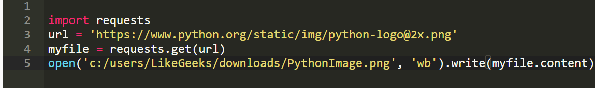
只需使用requests模块的get方法获取URL，然后将结果存储到名为myfile的变量中即可。然后，将变量的内容写入文件。
使用 wget
您还可以使用Python的**wget**模块从URL下载文件。可以使用pip安装wget模块，如下：
pip install wget
思考下列代码，我们可以用下列代码下载Python的Logo图标：
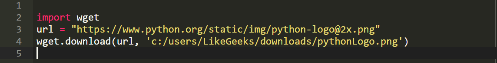
在此代码中，URL以及路径（另存图像的路径）将传递到wget模块的download方法。
下载重定向文件
在本节中，你将学习利用requests模块从一个URL中重定向到另一个PDF文件的URL下载。该URL的内容如下：
https://readthedocs.org/projects/python-guide/downloads/pdf/latest/
要下载此PDF文件，请使用以下代码：
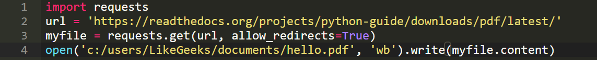
在此代码中，指定URL是我们要做的第一步。 然后，我们使用请求模块的get方法来获取URL的内容。在get方法中，我们将allow_redirects选项设置为True，这将允许URL重定向，并且将重定向后的内容分配给变量myfile 。
最后，我们打开一个文件来写入获取的内容。
分块下载大文件
思考下列代码:
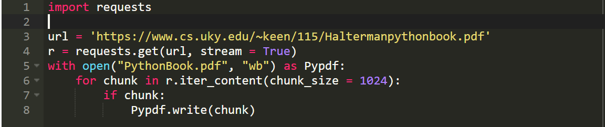
首先，像以往那样使用requests模块的get方法，但是这次，我们将stream属性设置为True。
然后，在当前工作目录中创建一个名为PythonBook.pdf的文件并打开以进行写入。
然后，指定一次要下载的块大小。 我们将其设置为1024个字节，遍历每个块，然后将这些块写入文件中，直到块迭代完成为止。
界面不漂亮？ 不用担心，稍后我们将显示进度条以供下载!
下载多个文件（并行/批量下载）
为了能同时下载多个文件，请导入以下模块：
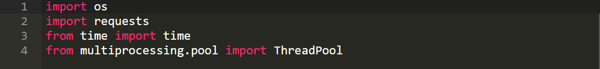
导入os和time模块以便于检测下载这些文件需要多少时间。
模块ThreadPool 使您可以使用池运行多个线程或进程。
让我们创建一个简单的函数，将响应分块发送到文件:
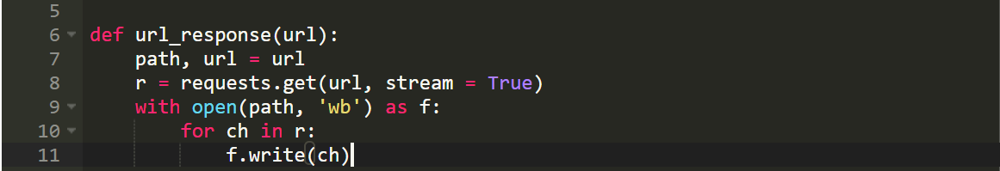
这里的URL是一个二维数组，用于指定要下载的页面的路径和URL。
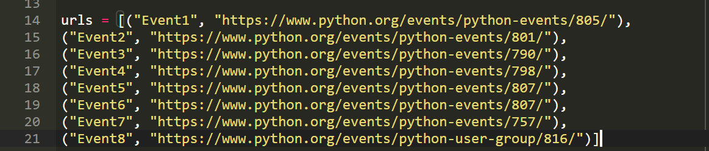
如上一节所述，将URL传递给request.get。 最后，打开文件（URL中指定的路径）并写入页面内容。
现在，我们可以分别为每个URL调用此函数，也可以同时为所有URL调用此函数。让我们分别在for循环中为每个URL进行操作并计时：
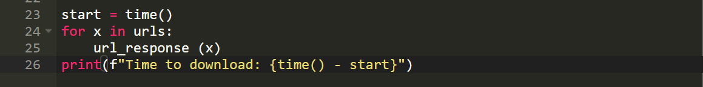
现在，用以下代码替换for循环：
ThreadPool(9).imap_unordered(url_response, urls)
运行脚本。
使用进度条下载
进度栏是客户端模块的UI小部件。 要安装客户端模块，请键入以下命令：
pip install clint
思考以下代码：
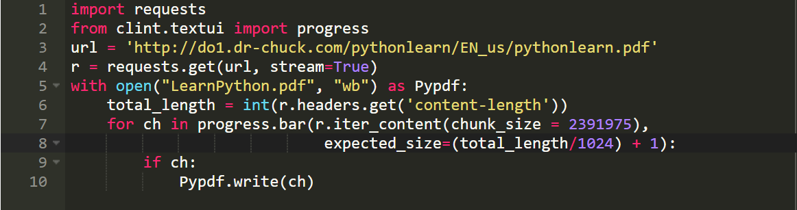
在这段代码中，我们导入了requests模块，然后从clint.textui中导入progress模块。 唯一的区别在于for循环。 在将内容写入文件时，我们使用了progress模块的bar方法。
使用urllib下载网页
在本节中，我们将使用urllib下载网页。
urllib库是Python的标准库，因此你无需安装它。
以下代码行可以轻松下载网页：
urllib.request.urlretrieve('url', 'path')
在此处指定要另存为的URL，以及要在其中存储的路径：
urllib.request.urlretrieve('https://www.python.org/', 'c:/users/LikeGeeks/documents/PythonOrganization.html')
在这段代码中，我们使用了urlretrieve 方法并传递了文件的URL，以及我们将保存文件的路径。 文件扩展名为.html。
通过代理下载
如果需要使用代理下载文件，则可以使用urllib模块中的ProxyHandler。
思考以下代码：
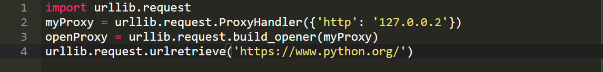
在此代码中，我们创建了代理对象，并通过调用urllib的build_opener方法打开了代理传递了代理对象。 然后，我们对检索页面的发送请求。另外，你可以和官方文档那样使用requests模块。
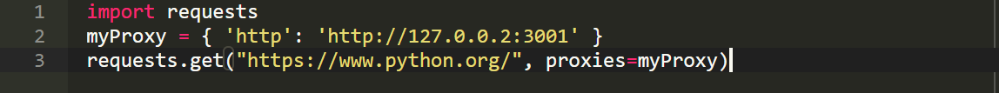
只需导入请求模块并创建您的代理对象。
使用urllib3
urllib3是urllib模块的改进版本。 您可以使用pip下载并安装它：
pip install urllib3
我们将获取一个网页，并使用urllib3将其存储在文本文件中。
导入以下模块： import urllib3, shutil
当处理文件时，将使用shutil模块。
现在，像这样初始化URL字符串变量：
url = 'https://www.python.org/'
然后，我们使用urllib3模块的PoolManager 跟踪必要的连接池。
c = urllib3.PoolManager()
创建一个文件：
filename = "test.txt"
最后，我们发送GET请求以获取URL并打开一个文件，并将响应写入该文件：
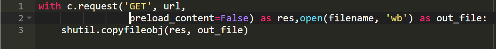
使用Boto3从S3下载文件
要从Amazon S3下载文件，您可以使用Python boto3模块。
在开始之前，您需要使用pip安装awscli模块：
pip install awscli
对于AWS配置，运行以下命令：
aws configure
现在，输入您的详细信息为：
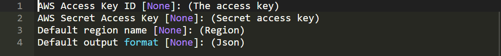
要从Amazon S3下载文件，请导入boto3和botocore。 Boto3是用于Python的Amazon SDK，它用于访问Amazon Web服务（例如S3）。 Botocore提供了与Amazon Web服务进行交互的命令行服务。
Botocore自带awscli。 要安装boto3，请运行以下命令：
pip install boto3
现在导入以下两个模块：
import boto3, botocore
从亚马逊下载文件时，我们需要三个参数：
- Bucket的名字
- 您需要下载的文件的名称
- 下载后的文件名
初始化变量：
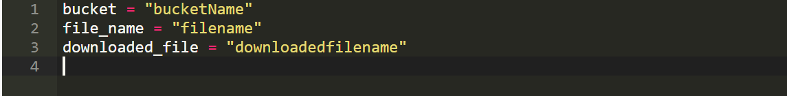
现在，初始化一个变量以使用会话资源。 为此，我们将调用boto3的resource()方法并传递服务，即s3：
service = boto3.resource('s3')
最后，使用download_file 方法并传递变量：
service.Bucket(bucket).download_file(file_name, downloaded_file)
使用 asyncio
asyncio模块专注于处理系统事件。 它围绕事件循环工作，该事件循环等待事件发生，然后对该事件做出反应。 反应可能是调用另一个函数。 此过程称为事件处理。 asyncio模块使用协程进行事件处理。
import asyncio
现在，定义如下所示的异步协程方法：
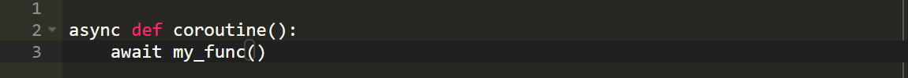
关键字async表示这是一个本地asyncio协同程序。 在协同程序的主体内部，我们有await关键字，该关键字返回某个值。 还可以使用return关键字。
现在，让我们使用协程创建代码以从网络下载文件：
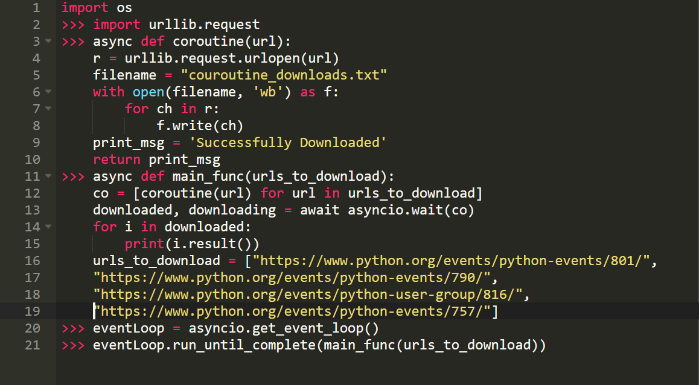
在此代码中，我们创建了一个异步协程函数，该函数下载文件并返回一条消息。
然后，我们有另一个异步协程称为main_func等待URL，并使所有URL置于队列中。 asyncio的等待功能等待协程完成。
现在要启动协程，我们必须使用get_event_loop()方法将协程放入事件循环中，最后，使用run_until_complete()方法执行事件循环。
使用Python下载文件很有趣。 希望本教程对您有所帮助！